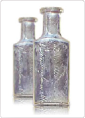
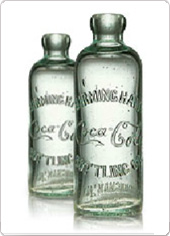
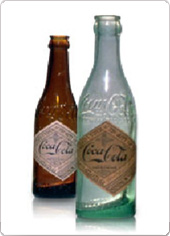
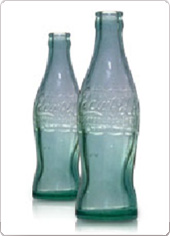
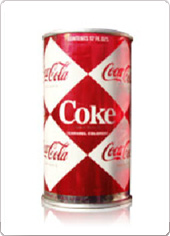
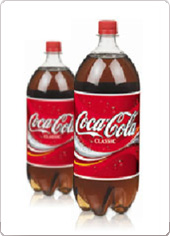
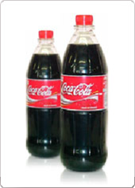
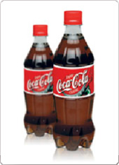
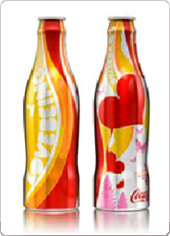
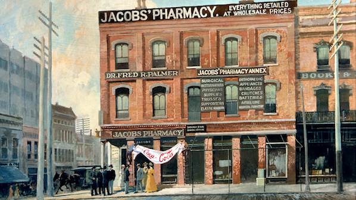

HOME > 코카콜라 스토리 > SINCE 1886
SINCE 1886
Design History
-

- 1886~
- 1886년 코카-콜라를 개발한 존 펨버튼이
약국에서 50센트에 팔던 당시의 코카-콜라 용기.
애틀란타에서 처음 판매가 시작되었습니다.
-

- 1899~
- 최초의 바틀러였던 비에든한이 사용했던 용기.
당시의 용기는 마개 뚜껑이 있는 쇠와 고무로
만들어진 마개로 구성되어 있었습니다.
-

- 1900~
- 처음으로 상표가 붙은 용기.
다이아몬드형 로고가 붙어있었으며,
처음으로 마개 뚜껑 대신 캡 뚜껑을 사용하였습니다.
-

- 1916~
- 모조품들 사이에서 진품을 가려내기 위해
코코넛 열매의 모양을 본떠 고안하게 된 컨투어 병.
1916년 처음으로 인디아나주의 루트 글래스 사에서
컨투어병에 담긴 코카-콜라를 생산하기 시작했습니다.
-

- 1960~
- 1960년 처음 소개된 12온스짜리 알루미늄 캔 용기.
캔 겉면의 빨간색과 하얀색의 다이아몬드 형태 때문에
오늘날 다이아몬트 캔이라고도 불립니다.
-

- 1977~
- 1977년 소개된 패밀리 사이즈 패트병
-

- 1991~
- 1991년 출시된 리필이 가능한 코카-콜라 패트병
-

- 1993~
- 1993년 출시된 컨투어 패트병.
코카-콜라의 독특한 병 모양인 컨투어 병의 디자인을 본뜬
패트병이 1993년 처음으로 소개되었습니다.
-

- 2005~
- 2005년 처음 출시된 알루미늄 컨투어병.
알루미늄으로 만들어 병 모양으로 제작되었지만 가볍고,
올림픽, 파티 등 시즌별 다양한 디자인이
한정판으로 출시되기도 하였습니다.
코카-콜라의 탄생

코카-콜라를 판매했던 제이콥스 약국
- 1886.05.08
- 5월 8일은 코카-콜라가 세상에 첫 선을 보인 날이다. 음료수가 만들어지고 130여 년의 시간이 흐르는 동안 한결같이 사랑을 받는 일이란 결코 쉽지 않을 것이다. 코카-콜라가 1886년 처음 탄생한 뒤 현재의 세계적인 음료 브랜드로 거듭나기까지는 수많은 사람들의 노력이 있었다. 그중에서도 제일 처음 코카-콜라를 발명했던 존 펨버턴(John Pemberton) 박사의 이야기를 빼놓을 수 없다.
- 코카-콜라를 처음 만든 사람은 약사
- 미국 조지아 주 애틀랜타에서 약사로 일했던 존 펨버턴은 자신의 연구실에서 여러 가지 약재들을 배합해서 이것저것 만들어 보는 게 취미였다. 코카-콜라가 탄생한 그날 역시 연구실에서 이런저런 배합을 시도하는 중이었다. 코카-콜라가 만들어지던 당시의 미국은 남북 전쟁이 끝나고 사회적으로 혼란스러운 시기를 겪고 있었다. 가난과 질병으로 고통받는 사람들, 그리고 전후 재건사업의 피로에 지쳐 쓰러지는 사람들이 속속 생겨났다. 그 탓에 미리 조제해 두었다가 판매하는 약들이 엄청난 인기를 누렸다. 펨버턴 박사는 이러한 시대적 분위기에 맞게 늘 무언가를 만들어야겠다는 생각을 하고 있었다. 기왕이면 약효도 있고 맛도 좋은 음료를 만들고 싶었다. 수차례에 걸친 실험과 연구 끝에 드디어 달콤하면서도 톡 쏘는 맛을 지닌 독특한 음료가 탄생했다. 바로 코카-콜라였다!
애틀랜타 마리에트 스트리트(Marietta Street) 107번지에 위치한 그의 연구실
Coca-Cola의 제조와 소다파운틴
- 5센트로 즐기는 달콤 상쾌한 맛!
- 1886년 5월 8일 펨버턴은 자신이 배합해 만든 코카-콜라 원액을 연구실 근처에 위치한 제이콥스 약국 (Jacobs’ Pharmacy)으로 보냈다. 당시에는 동네 약국마다 탄산수 제조기로 알려진 ‘소다파운틴(Soda fountain)’이 있었다. 소다파운틴 앞은 가볍게 음료나 아이스크림을 즐기며 이야기를 나눌 수 있어 늘 사람들로 붐볐고, 1890년대부터 2000년대 초반까지 미국 문화를 상징하는 것으로도 잘 알려져 있다. 바로 이곳에서 코카-콜라 원액과 탄산수를 유리잔에 함께 넣고 수저로 휘휘 저어 코카-콜라가 만들어졌고, 사람들에게 판매되었다. 가격은 한 잔에 5센트. 코카-콜라는 특유의 맛과 상쾌함으로 사람들을 단번에 매료시켰다.